视频学习笔记：从问题到理解
从 AI、产品和研究出发，把学习、工作与生活中的问题慢慢弄明白。
从感兴趣的具体问题出发，按自己的节奏探索。
从一个问题出发。
这些入口聚焦搜索与 Agent，也可以在学习脉络中按兴趣选择其他主题。
贯穿课程的一张练习纸
选一个你确实想解决的问题，保留原回答，然后写下：
- 用户此刻要完成什么？怎样才算完成？
- 哪一句话或哪一步出了问题？证据在哪里？
- 改动哪个环节？哪些条件保持不变？
- 怎样用另一个问题检验，避免只修好这一例？
AI 生成的示例只能作为练习材料；项目经历、判断和测量结果需要自己完成并如实记录。
当前筛选没有结果，试试清空关键词或切回全部内容。
先画清技术地图
- 补充可阅读
从一次问答开始，看懂 Agent、RAG、MCP 和 Skill
用另一组具体例子辨清相邻概念，检查自己能否讲清区别。
- 拓展可阅读
从零使用 AI：从说清任务到检查结果
初学者如何从具体任务理解模型、智能体、上下文和结果验证？
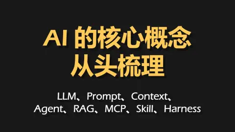
核心可阅读从一句“我想去云南旅行”，看懂模型、Agent 和它周围的工具
区分模型、检索、工具、上下文和运行框架，建立后续归因的地图。
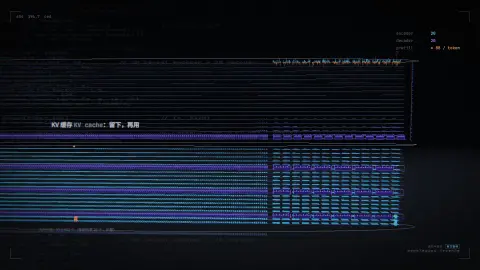
拓展可阅读一条提示词经过模型：用动画认识几个环节
动画怎样呈现提示词经过模型的过程？
搜索、检索与证据
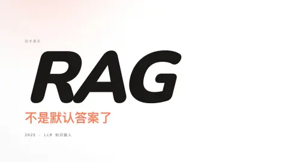
核心可阅读给 AI 接上资料，先弄清它需要怎样找答案
比较不同知识获取路线，避免把所有问题套进同一架构。
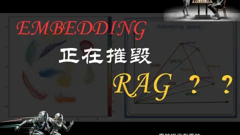
核心可阅读找到意思相近的句子，为什么仍然答错？
检查向量相似度与任务相关性之间的差距。
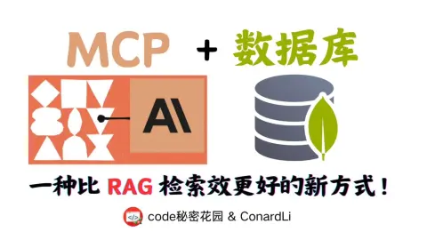
核心可阅读统计学生人数，为什么该把查询交给数据库？
认识结构化查询与文本检索的适用边界。
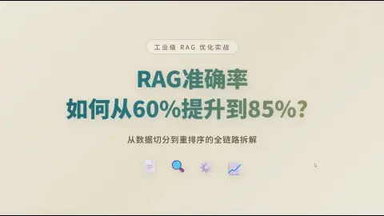
补充可阅读RAG 回答不准，先看资料有没有找到，再看答案有没有照着写
练习追问准确率的分母、测试集和改进归因；标题指标需核对。
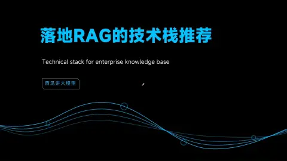
补充可阅读一套 RAG 怎样分工：先管理资料，再回答问题，最后检查效果
用技术栈案例连接检索流程，工具版本以录制时为准。
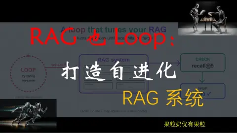
核心可阅读让 RAG 自己试参数：先看它怎样找论文，再看它怎样改进
理解检索反馈循环及其成本与终止条件。
- 拓展可阅读
RAG 怎样从“找到资料”走到有依据的图文回答
把资料解析、检索排序、引用核查与用户下一步行动连起来。
评测、品味与数据
- 核心可阅读
AI 的回答到底好不好？从推荐岗位和取消订单讲起
用真实任务定义评价标准，选择高价值案例，沿链路定位失败。
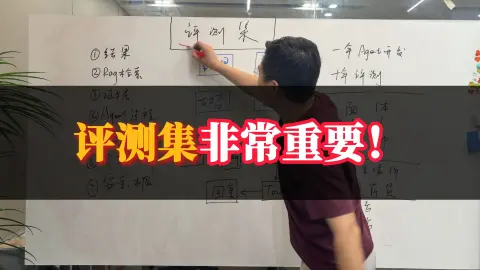
拓展可阅读评测 Agent：从回答正确到工具是否真的完成
评测 Agent 时怎样检查检索、工具执行及最终结果？
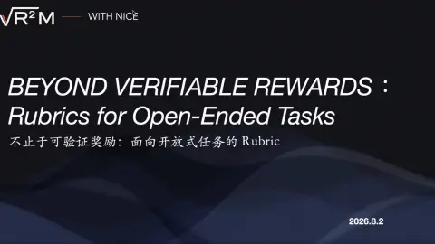
核心可阅读开放任务怎样评分：从 Rubric 到能够学习的研究助手
复用完整 Rubric 合集，理解开放任务的评价标准与奖励。
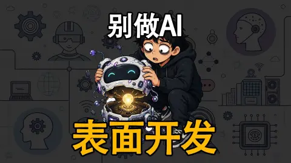
拓展可阅读把 AI agent 的手工验收改成可重复的回归测试
怎样把对 agent 的手工验收变成另一个 coding agent 可以执行的回归验证闭环？
- 核心可阅读
模型已经学过很多知识，为什么还需要后训练？
建立后训练的直觉；性能宣传与机制解释分开看。
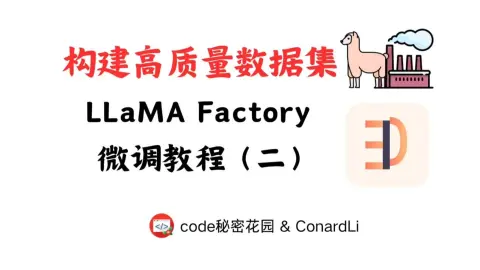
核心可阅读微调数据怎么准备，才能让模型学到我们真正需要的能力？
理解数据格式、样本构造与数据质量检查。
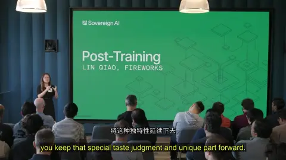
核心可阅读后训练怎样把产品判断，变成模型持续采用的做法？
复用品味与后训练笔记，把偏好转成可表达的判断标准。
- 拓展可阅读
怎样让模型既听得懂要求，也值得相信：从 SFT 到 RLHF、DPO
补齐监督微调与偏好优化的原理，供需要技术深度时查阅。
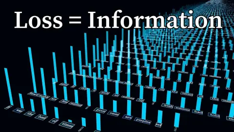
拓展可阅读交叉熵是什么：从机器人指令的压缩到语言模型训练
交叉熵如何从编码长度出现，并联系到语言模型预测与蒸馏？
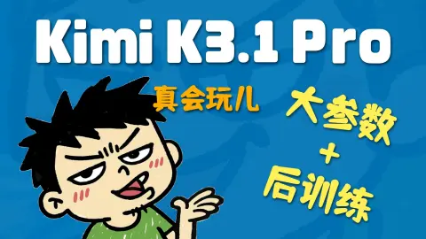
拓展可阅读大模型后训练能改变什么？从七个 Agent 任务观察
大模型后训练与一组实际 Agent 任务分别能说明什么？
- 拓展可阅读
如何比较 AI Agent：看同一任务、交互和总成本
怎样用具体任务比较 agent 的结果、交互体验与费用？
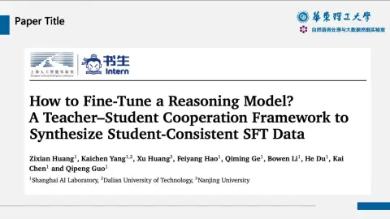
拓展可阅读强模型会解题，为什么它写的教材未必适合小模型？
理解教师与学生共同生成训练数据的研究思路及适用条件。
- 拓展暂未提供讲解
九年了！你和我说注意力层根本不存在！？【NeurIPS'26】
完整内容暂不可读，先保留原视频入口。
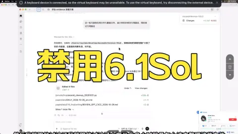
拓展可阅读从两次文件误改看 AI 的任务边界
两次越界修改和其他工作体验，如何支撑 Rayawa 对 6.1 Sol 的个人评价？
Agent 的过程与交付
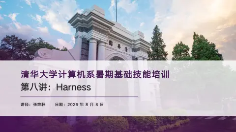
核心可阅读看懂 Agent Harness：从“读一下 README”到一次完整的执行循环
把 Agent 失败落到可观察的循环、工具和上下文管理。
- 核心可阅读
工具调用怎样变可靠：让模型知道选什么，也让程序接得住
把工具调用质量拆成可测试的行为。
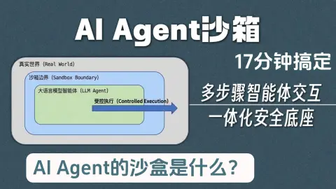
补充可阅读Agent 的沙箱：让一次错误停在可承受的范围里
理解沙箱、权限边界和执行安全如何影响产品质量。
- 补充可阅读
Agent Infra：模型想做一件事，谁让它真正发生
理解基础设施和最终用户体验之间的关系。
- 拓展可阅读
让 Agent 接着昨天的事继续做：记忆系统与多步骤应用
系统了解记忆的写入、检索、更新及失效风险；逐集标注覆盖。
- 补充可阅读
DeerFlow 2.0：任务交给一个主管，复杂工作怎样分出去
比较单 Agent 与多 Agent 的工程取舍，不把热度当效果。
- 拓展可阅读
把经验做成 Skill：从视频初剪到团队工作流
如何把可重复工作整理成 skill，再组合为可以验证的工作流？
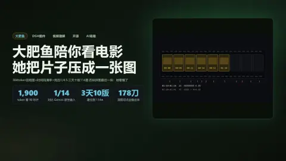
拓展可阅读场景感知分镜怎样把一段视频变成可查询的画面记录
场景感知分镜怎样用低分辨率切镜、分镜总览和时间码清单支持视频查询？
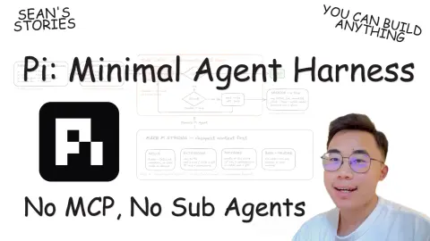
补充可阅读Pi Agent 的极简设计：一个编码循环，怎样接上自己的能力
通过极简框架辨认运行层的必要职责。
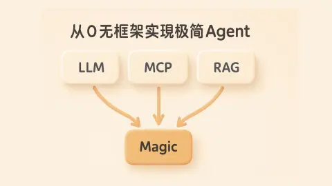
拓展可阅读从一次真实任务看懂：模型、MCP 工具与 RAG 怎样接起来
从最小实现观察模型、检索和工具接口如何衔接。
- 拓展可阅读
AI 怎样参与下一代 AI 的研究：从研究助手到递归自我改进
复用长访谈，了解自进化与反馈循环的研究背景。
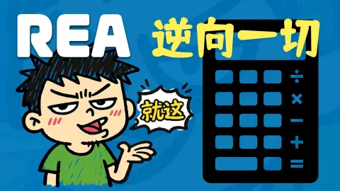
拓展可阅读从一个小程序看 AI 逆向：REA 把工具接进工作流
REA 如何把传统逆向工具接入 agent，演示又揭示了反编译与模型推断的边界？
- 拓展可阅读
用 AI 工作台做量化研究：从任务描述到回测复盘
长任务中如何组合目标描述、数据连接、模型执行与逐轮核查，避免把报告外观误当成结果可靠？
- 拓展可阅读
一段长提示词怎样描述录音整理工具
如何把录音整理需求讲成具有输入、输出与验证步骤的任务？
桌面助手与日常协作
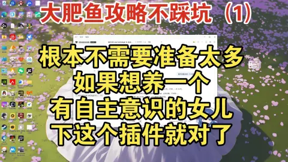
拓展可阅读桌面“大肥鱼”怎么养：先想清楚你要陪伴还是做事
把陪伴角色、模型连接和插件功能分开，理解 QQ 桥接怎样收发消息。
- 拓展可阅读
从桌面安装到课程助手：DeepSeek Harness 的基础工作流
怎样配置桌面 Harness 的模型、工作区、模式和权限，并用插件组合成课程助手？
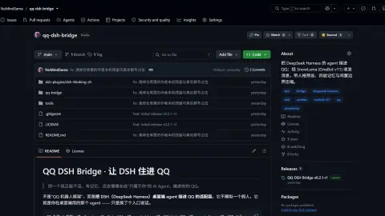
补充可阅读给桌面 AI 加记忆：外部档案、主动检索与空闲压缩
沿五层记忆设计理解近期对话、外部档案、检索和压缩如何配合。
- 拓展可阅读
从 Bot 实例到记忆插件：一条桌面 AI 鱼的部署流程
从创建 Bot 实例到选择检索模型，口播给出的部署顺序和取舍是什么？
- 拓展可阅读
从 API Key 到群聊插嘴：把桌面 AI 鱼接进 QQ
怎样配置模型 API、Bot 与 QQ 桥接，再调整人格、表情和群聊回复？
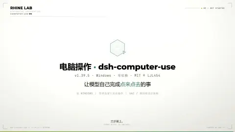
拓展可阅读让桌面 AI 操作窗口：截图定位与连续点击
该扩展如何通过截图、控件定位和连续动作操作桌面窗口？
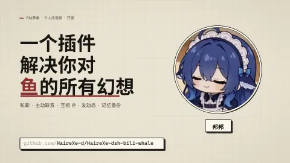
拓展可阅读这条“鱼”新增了哪些日常活动和记忆功能
这份改版插件怎样扩展主动互动、动态发布和跨设备记忆恢复？
- 拓展可阅读
多个 Bot 怎样协作：从资料整理到任务派发
多个职责明确的 bot 如何通过外部数据和任务交接协作？
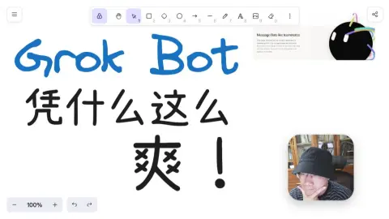
拓展可阅读云端电脑与多个 Bot：一次个人使用体验
云端电脑和多个 bot 怎样围绕同一任务协作？
软件工程与架构
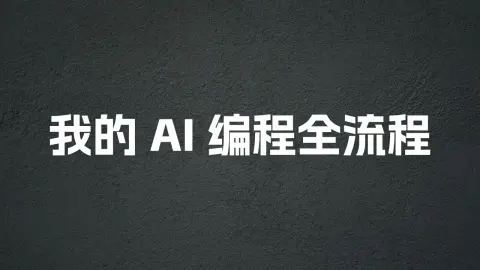
拓展可阅读和 AI 一起做电子书阅读器：从需求到亲手验证
如何把 AI 编程任务从模糊需求推进到可验证的产品？
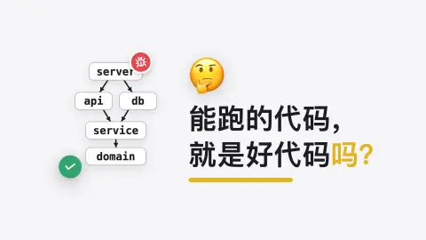
核心可阅读从课程报名看架构设计：把规则、流程和数据库分开
跟着选课程序拆开接口、业务规则和数据库，理解依赖倒置为何能减少修改。
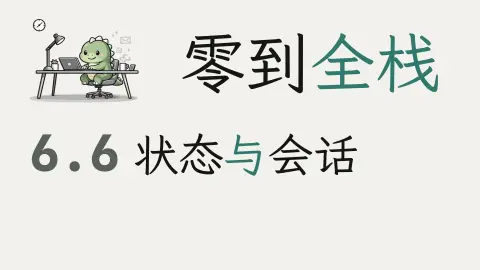
拓展可阅读状态与会话：让文字实验室区分两份历史
HTTP 请求无状态时，文字实验室如何维护并区分浏览器会话？
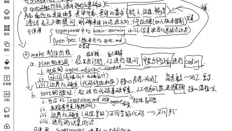
拓展可阅读AI 应用开发的三个阶段：需求、制作和维护
AI 应用从需求到实现再到维护，怎样安排人与工具的协作？
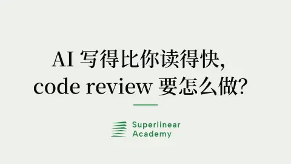
拓展可阅读AI 写代码越来越快，审查时应该检查什么？
AI 提高代码产出后，如何分别处理错误、业务上下文与发布责任？
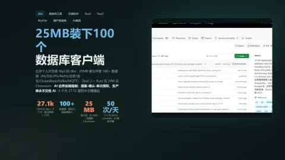
拓展可阅读一款轻量数据库客户端怎样接入多种数据源和 AI
轻量数据库客户端怎样用按需驱动扩展数据源，并限制 AI 的数据库操作？
- 拓展可阅读
一段跨设备工作区展示：从连接到提交任务
短片怎样展示跨设备工作区？
用户任务与产品判断
- 补充可阅读
厨房里的一米距离，怎样变成一个 AI 产品
把需求、交互和原型串成可验证的项目叙事。
- 拓展可阅读
写代码之前，先让 AI 问清楚：乐队排练工具的第一版
如何让 AI 通过追问帮助明确第一版产品需求？
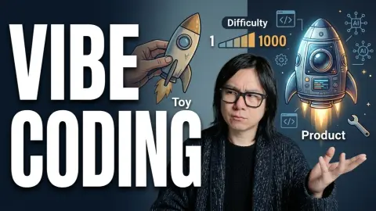
核心可阅读第一版能运行，第二天还能交付吗：两个 AI 内容站的产品复盘
识别原型走向真实可用产品时的缺口。
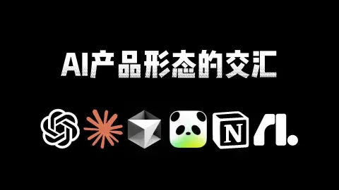
拓展可阅读对话负责商量，工作区负责修改：AI 产品为什么走向同一种界面
观察对话、画布和产物之间的交互关系。
- 补充可阅读
从生成一张图，到做成一个产品：AIGC 产品经理要理解什么
对照早期 AIGC 产品观点，区分长期方法和历史判断。
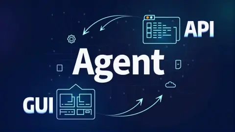
拓展可阅读让 AI 真正操作软件：API、屏幕与人的位置
理解 GUI、API 与人机协作的边界。
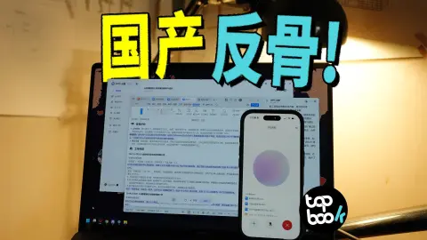
补充可阅读办公 AI 怎样帮上忙：从改一份文档，到一起打磨课件
从办公任务观察上手成本、产物质量和产品入口。
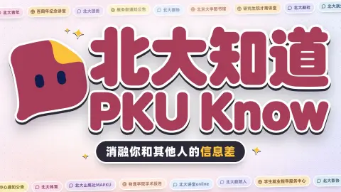
拓展可阅读北大知道：把分散的校园通知放到同一个网页
北大知道怎样集中分散的校园活动信息，并帮助用户按类别、学科和日期查找？
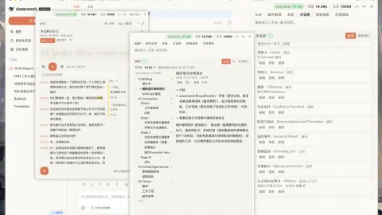
拓展可阅读把涉外非诉工作的常用材料收进一个工作台
如何把常用提示、邮件、录音和术语资料放进一个可检索并能复用的工作台？
- 核心可阅读
让 AI 帮忙研究一个问题：五个 Deep Research 案例怎样逐步深入
用具体研究任务分析深度搜索的输出与交互，界面按录制版本理解。
- 暂无视频封面核心暂未提供讲解
我们为什么要做产品分析？怎么做？
把工业设计中的产品分析迁移到 AI 产品判断。
设计与表达
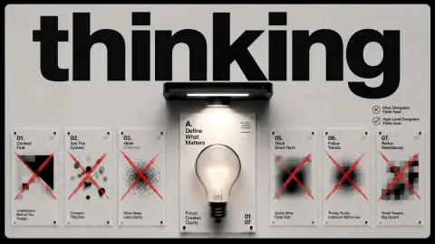
核心可阅读设计怎样被人理解：从第一眼看到什么，到离开后记住什么
复用信息层级与感知差异的设计方法，迁移到回答呈现。
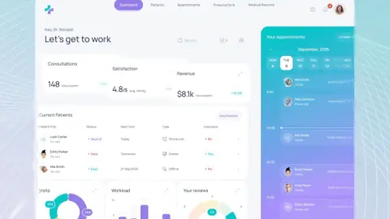
补充可阅读UI 的“呼吸感”在哪里：沿着六个界面看空间、主次和状态
复用留白与信息分组案例，改善学习稿与回答的阅读负担。
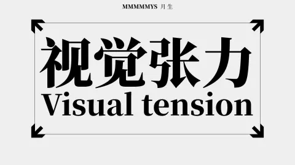
拓展可阅读视觉张力从哪里来：观察画面中的六种关系
画面中的方向、尺度和节奏如何形成视觉张力？
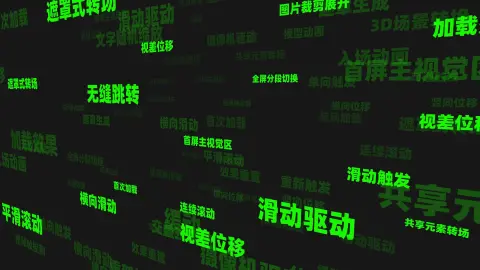
拓展可阅读网页交互术语 01：页面转场与滚动效果
页面加载、转场与滚动交互的术语如何对应到用户实际看到的变化？
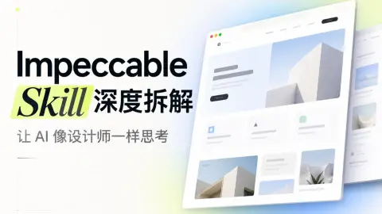
拓展可阅读从产品访谈到两轮审查：Impeccable 怎样引导 AI 做网页设计
Impeccable 怎样把产品理解、视觉探索和设计审查连成一套网页生成流程？
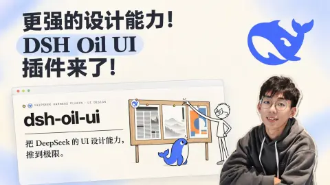
拓展可阅读Oil UI 设计技能的 Harness 插件：把设计指引接进页面迭代
Oil UI 的 Harness 插件整合了哪些设计指引、页面检查能力和子 agent 工作流？
- 补充可阅读
同一个 Skill，怎样做出更好的作品：内容、设计规则与具体反馈
复用设计与 AI 协作案例，练习明确质量标准。
- 拓展可阅读
从等轴网格到包豪斯：一组动态视觉风格
不同动态风格如何组织画面？
- 拓展可阅读
在一个房间里比较材质与光线
同一房间怎样比较材质和光线？
- 拓展可阅读
把 B 站读成一本杂志：浏览器扩展的界面预告
这款浏览器扩展怎样重做 B 站主要页面的阅读与交互体验？
调研、信息源与推理
- 核心可阅读
快速调研怎样开始：带着问题找资料，再让资料长出新问题
用快速调研方法把陌生问题转成证据清单。
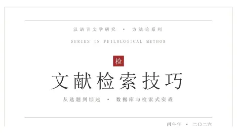
补充可阅读对一个题目感兴趣，怎么找到它的来路？
从梁祝兴趣追到民国戏曲舞台，学会沿关键词、参考文献和旧报刊寻找问题的来路。
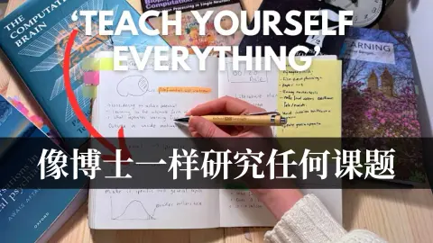
补充可阅读怎样研究一个陌生问题：从具体提问到文献网络
把宽泛兴趣变成具体问题，顺着综述与引用关系找到值得阅读的研究。
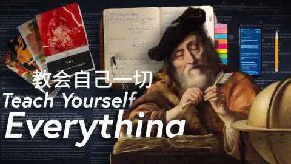
补充可阅读研究陌生主题：从兴趣、选题到整理证据
从选题和入门材料开始，安排阅读、整理证据，并把研究接回日常生活。
- 补充可阅读
AI 怎样加入调研：读懂长材料，沿着问题继续追问
对照调研方法的后续版本，提炼可复用步骤。
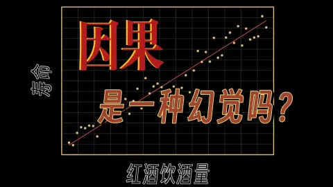
拓展可阅读两件事总一起发生，为什么还不能说一件导致了另一件
补充因果推理，避免把相关性或一次效果当成有效改进。
- 拓展可阅读
Lean 怎样检查一段数学证明
Lean 如何把证明构造与内核检查分开，并让大型数学形式化工作按依赖关系复用和协作？
- 拓展可阅读
MISAKA Agent：把研究任务交给不同角色的构想
这个研究 Agent 架构如何呈现角色分工？
- 暂无视频封面核心暂未提供讲解
【40分钟干货】我的「有效搜索」方法论——如何用公开渠道挖掘隐藏信息
理解公开信息检索的问题拆解、关键词和交叉验证。
- 补充可阅读
面对看不完的 AI 消息，我们究竟该从哪里学
主动选择信息源，减少二手信息和营销噪声。
- 补充可阅读
AI 消息、播客和长教程，怎样放进日常学习
建立低负担的一手信息获取习惯。
- 补充可阅读
AI 抛出的硬币，为什么未必一半朝上、一半朝下
用直观实验练习区分语言输出、随机机制与测试设计。
- 补充可阅读
大决定之前，先弄清自己准备走进怎样的生活
把调研与真实决策相连，辨认必要的信息缺口。
- 补充可阅读
用知识地图学习：深入一个问题，也能回到原来的位置
研究用 AI 学习陌生领域的方法与验证成本。
知识管理
- 补充可阅读
把笔记连成自己的网络：从属性、链接到定期回顾
用一次会面记录看懂属性、模板、链接和回顾如何让笔记有多个入口。
- 补充可阅读
如何优雅地用 Obsidian 边看视频边记笔记？
在 Obsidian 中把笔记连回视频时间点，用截图、书签和标签找回讲题与操作。
- 拓展可阅读
团队怎样保留 AI 使用经验：从摩擦信号到知识维护
团队如何从 AI 会话中发现、分享和维护可复用经验？
- 拓展可阅读
白手：把本地日记变成 AI 可以检索的个人记忆
如何把个人日记组织成可查看、可按语义检索并能跨设备使用的 AI 记忆？
- 拓展可阅读
TextFold：把长文折叠成可展开的阅读层级
如何在长文的整体结构与逐段细读之间切换，同时核对 AI 回答？
- 拓展可阅读
从雪花到魔方：一段群论视觉短片
动画怎样用熟悉的形象呈现群论？
学习、表达与实践
- 核心可阅读
AI 把程序写出来以后，我们怎样确认自己真的学会了
复用 build-to-learn，防止做完产物却无法独立解释。
- 拓展可阅读
用 AI 学习一门陌生知识：先摸底，再规划和反馈
如何用摸底、路径规划和持续反馈组织 AI 辅助学习？
- 拓展可阅读
让学习助手先问清目标：一门 C++ 课程怎样生成
自学助手如何根据目标和基础生成课程与实践任务？
- 拓展可阅读
用多种视角打开陌生领域，再用提问检查理解
怎样用多视角提问组织陌生领域学习，并通过测验和解释检查理解？
- 拓展可阅读
一篇文字为什么读起来像流水线？从实例检查表达
怎样通过具体语句检查 AI 辅助写作中的重复表达和内容质量？
- 补充可阅读
学懂一件事，与在考试里做好，分别需要关注什么
提炼可操作的学习循环，避免只收藏不练习。
- 补充可阅读
学习中断以后，怎样重新开始？
从自学经验中提炼练习与反馈方式。
- 补充可阅读
想了很多以后，怎样对自己的生活多懂一点？
练习保留自己的问题意识与判断。
- 暂无视频封面补充暂未提供讲解
OpenAI增长工程师：如何押注职业方向；如何增长产品；怎样讲好自己的经历，拿到入场劵？
学习如何讲清项目选择、行动和可核验的结果。
- 补充可阅读
用 AI 做项目管理工具：把想法、界面和真实操作接起来
复用轻量项目管理案例，保持任务与验收标准可见。
- 拓展暂未提供讲解
【一飞冲天】这可能是 AI 时代最重要的技能！如何有效去除信息噪音？不被核弹炸死
完整内容暂不可读，先保留原视频入口。
- 拓展可阅读
荒漠里的风：用观察修正原来的判断
发现异常后，怎样形成并检查一个新的解释？
职业与成长
- 补充可阅读
想找后端实习，怎样把零散学习接成一条路？
复用技术实习准备方法，挑选与产品策略方向相通的部分。
- 补充可阅读
同一道面试题，怎样从“我做过”讲到“我想清楚了”？
通过面试对比观察表达与信息匹配。
- 补充可阅读
Agent 面试为什么会一路问到数据库、消息队列和效果验证？
把真实面试复盘用作自查，不把个人经历当统一招聘标准。
- 补充可阅读
研究生发表一篇 SCI 意味着什么？
从第一篇论文的实验与投稿经历，理解发表对研究能力、毕业和求职的不同意义。
- 补充可阅读
越来越卷，死磕大厂还值吗？打工 3 年真实感受
跟着一位运营三年的收入、开销和工作经历，算清高薪背后的时间与选择。
- 补充可阅读
为什么同学从鹅厂实习回来，却放弃了转正？
看两位实习生怎样权衡转正与秋招，以及实习经历能带来哪些具体机会。
- 拓展可阅读
北大直博才敢说“上桌吃饭”？计算机就业的 K 型分化，比你想的更残酷
计算机岗位如何分层，技能错配和初级入口变化怎样影响毕业生？
经济与财务
- 拓展可阅读
期权怎样定价：用一个两种结果的模型理解看涨权利
如何用到期收益和复制组合理解看涨期权的价值，并看清杠杆与时间价值的影响？
- 拓展可阅读
“54万元的自由报价”从哪里来：生活预算、卖出看跌期权与资金预留
54万元如何由生活预算、卖出看跌期权现金流与保证金备用金推算出来，哪些假设会使这套方案失效？
- 拓展可阅读
从照着估值表买基金，到只重仓看得懂的公司：一段个人投资复盘
投资者如何从跟随估值表定投，逐步建立资产配置规则，并将个股仓位集中到自己认为看得懂的企业？
- 拓展可阅读
大宗商品超级周期：一条关于货币、需求与供给的推演
货币、需求和供给周期如何构成大宗商品上涨的条件链？
- 拓展可阅读
从30万日元到两千万：久留美的FX首单为何像赌博
久留美的盈利目标、胜率逻辑与杠杆风险是否匹配？
- 拓展可阅读
一条时间线上的上证指数：音乐视频中的市场图形
歌曲画面怎样呈现上证指数时间线？
- 拓展可阅读
币安热钱包事件：沿动画追踪资产流向
动画怎样展示币安热钱包事件的资产流向？
- 拓展可阅读
特朗普的商业版图：从品牌授权到加密代币
特朗普 2025 年度申报中不同种类的收入、企业融资和资产估值应如何区分？
家庭与日常
- 拓展可阅读
客厅留给谁用：一个二胎家庭把收纳、喝茶和相处放进同一套房子
如何从家庭成员的日常动作、兴趣和成长阶段出发，安排公共空间、收纳与可复用家具？
- 拓展可阅读
家具售价里的“成本”包含什么：从沙发结构、木作细节到展厅报价
如何把家具的材料、结构、坐感、交付服务和促销规则拆开比较，并正确理解商家公布的成本与售价？
- 拓展可阅读
2026年10月二手显卡行情回顾：价格、性能与成色要分开看
如何结合录制时行情、性能、用途与二手卡风险理解显卡推荐等级？
身心与生活
- 拓展可阅读
气馁时怎样找回行动感：从自我评价转向能动性
气馁削弱行动时，如何从外部评价转向可选择的下一步，并建立多来源的成长支持？
- 拓展可阅读
健康习惯为什么难坚持：从生活链条里找一个容易改变的环节
当睡眠、饮食、压力和运动彼此牵动时，怎样找到容易开始的改变点并从中断中恢复？
- 拓展可阅读
允许自己紧张，然后把下一句话说出来
怎样把一次表现与自我价值分开，并逐步练习在紧张时继续表达？
- 拓展可阅读
自卑会在哪一天消失？两段成长经历里的比较、归属与自我接纳
自卑如何在环境差异、被排斥与关系支持中形成并变化？
- 拓展可阅读
“努力”可以指向自己在乎的生活
努力除了满足外部的学习和工作要求，还可以指向什么？
- 拓展可阅读
我们正在把所有人训练成同一种人？
均值优化怎样连接模型训练、平台推荐和社会对个人差异的筛选？
文化与作品
- 拓展可阅读
当游戏变成社会制度：读《游戏玩家》里的文明、帝国与干预难题
理想社会面对远方的压迫时如何介入，同时避免替他者和自身公众做主？
- 拓展可阅读
从情节细节看创作者的经验边界：读故事，也读自己的长处
如何从人物处理问题的方式，分析故事对生活经验的掌握，并据此认识创作者自己的长处？
- 拓展可阅读
十月完结网文怎么挑：设定、节奏和收尾都要看
完结长篇的设定、成长节奏和后期收束，分别怎样影响追读体验？
- 拓展可阅读
当一段直播被剪成切片：表达者担心失去什么
表达者为何担心一段直播讨论被剪辑后失去上下文？
- 暂无视频封面拓展暂未提供讲解
暂不可用的视频
视频目前不可用，暂留入口。
- 拓展可阅读
《星游记》前传电影启动：一段出发预告
这段《星游记》前传电影启动预告传达了什么？
- 拓展可阅读
菲欧妮的设计解读：医疗元素、重生与束缚
视频如何将菲欧妮的医疗造型、重生能力与角色处境联系起来？
- 拓展可阅读
《无畏契约》短片：残局中的拆包配合
这段残局短片如何呈现拆包配合与夸张解说？
- 拓展可阅读
直播里的一次读书闲聊
这段直播闲聊的笑点如何从一个书名展开？
- 拓展可阅读
《孤独摇滚！星之足迹》：电影预告一瞥
这段电影预告展示了什么？
- 拓展可阅读
一张学习氛围拼贴：背景播放片段
这段背景播放片段呈现什么画面？
- 拓展可阅读
尘暴、棋子与词语：一段影像短片
这段预告实际呈现了哪些内容？
- 拓展可阅读
学生会的旅行与日常：第五集观看导读
第五集怎样用旅行和校园日常呈现学生会角色之间的关系？
- 拓展可阅读
学生会第五话：旅行与社团日常的另一份上传
这份第五话上传包含哪些内容，观看时需要注意什么？
- 拓展可阅读
动画开播后，他把30万日元变成一场个人投资挑战
创作者怎样把对动画角色的喜爱包装成个人投资挑战？
换设备，继续学
课程内容通过 GitHub Pages 阅读。进度保存在本机，下面两个按钮可以手动带走；不会上传任何练习答案或浏览记录。